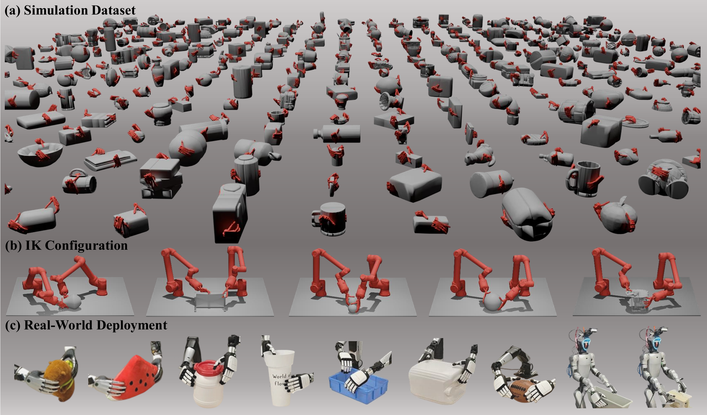
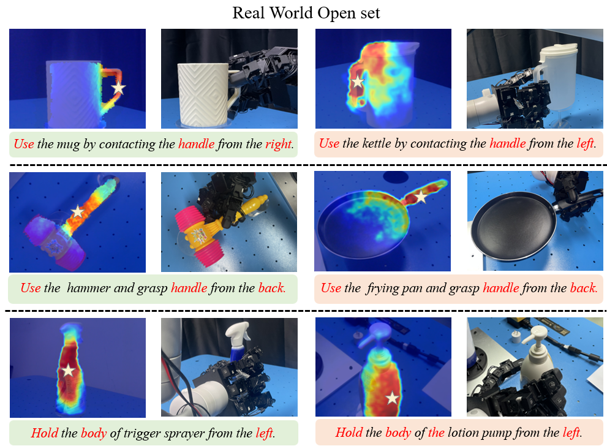
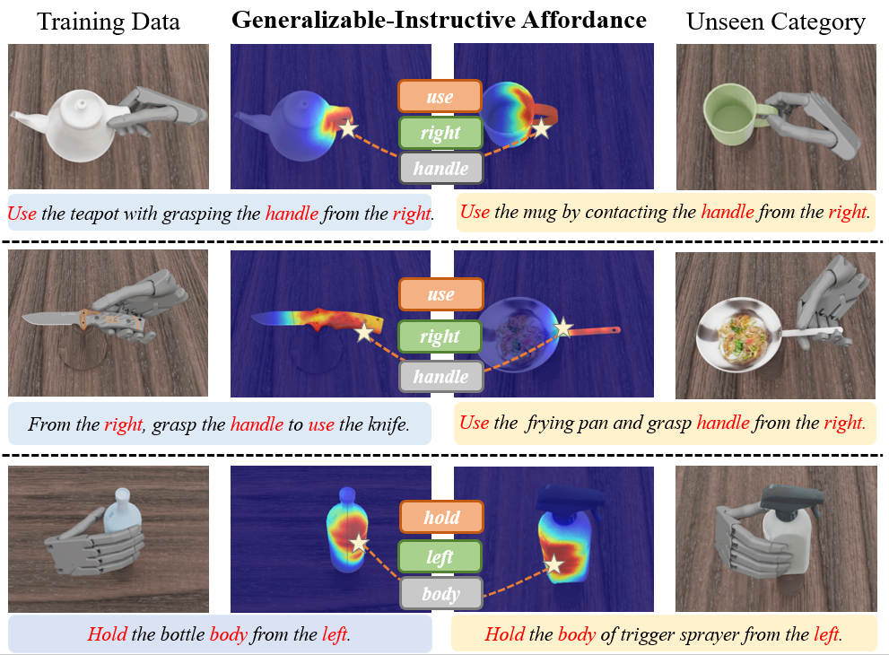
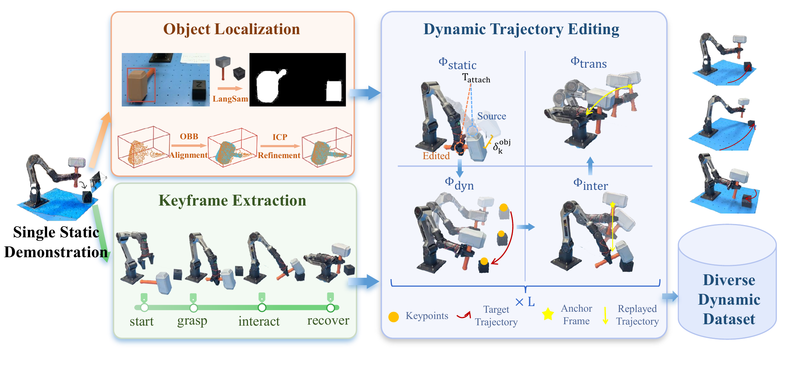
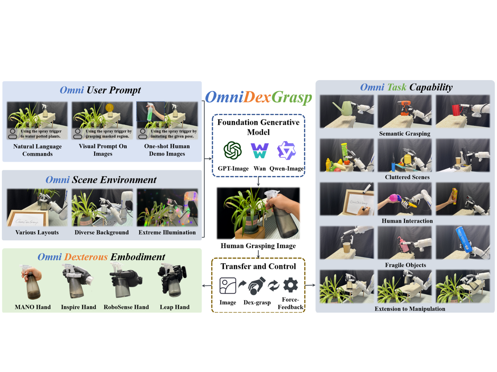
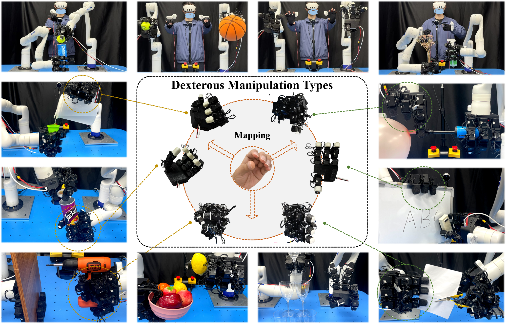

|
Mu Lin | 林沐 Hi, I'm Mu Lin. I am currently pursuing a Master's degree at Shenzhen International Graduate School, Tsinghua University, advised by Prof. Yansong Tang. Previously, I graduated from Sun Yat-sen University with a B.E. in Computer Science and Technology in 2026. My research focuses on robotic learning and computer vision, particularly in dexterous grasping and manipulation. I was previously advised by Prof. Wei-Shi Zheng at the Intelligence Science and System Lab (ISEE). |
{kind=link}
Publications*: equal contribution; †: corresponding author(s). Papers with highlighted background are my main contributions. |

 |
BiDexGrasp: Coordinated Bimanual Dexterous Grasps across Object
Geometries and Sizes
A large-scale bimanual dexterous grasping dataset and a
geometry-size-adaptive grasping generation model.
|
|
  |
AffordDexGrasp: Open-set Language-guided Dexterous Grasp with
Generalizable-Instructive Affordance
Open-Set Language-guided dexterous grasp based on
generalizable-instructive Affordance.
|
|
 |
DynamicManip: Enabling Dynamic Manipulation from a Single Static
Demonstration
A static-to-dynamic augmentation pipeline and dynamic-aware adaptive
policy that enable robots to learn dynamic manipulation from a single static demonstration.
|

|
Humanoid Whole-Body Manipulation via Active Spatial Brain and
Generalizable Action Cerebellum
ECCV 2026 Oral Presentation
A generalizable humanoid loco-manipulation framework that combines
Active Spatial Brain for spatial perception and planning with Generalizable Action
Cerebellum for executable whole-body robot actions.
|
|
 |
OmniDexGrasp: Generalizable Dexterous Grasping via Foundation Model and
Force Feedback
A generalizable dexterous framework that achieves omni-capabilities
in user prompting, dexterous embodiment, and grasping tasks.
|
|
 |
TypeTele: Releasing Dexterity in Teleoperation by Dexterous Manipulation
Types
A type-guided dexterous teleoperation system that enables operators
to select appropriate manipulation types for handling various objects and tasks.
|
Experience |
|
|
Tsinghua University
Master's student at Shenzhen International Graduate School
|
|
|
Sun Yat-sen University
B.E. from School of Computer Science and Engineering
|
Honor |
|